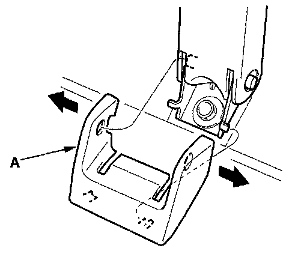
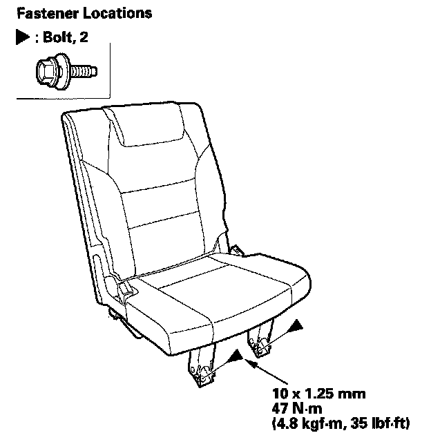
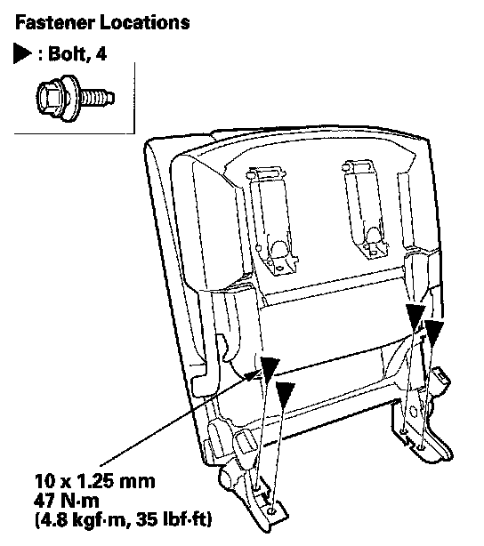

Third Row Seat
Third Row Seat Removal/InstallationSpecial Tools Required
KTC trim tool set SOJATP2014 *
* Available through the American Honda Tool and Equipment Program
NOTE:
- Use the appropriate tool from the KTC trim tool set to avoid damage when removing components.
- Take care not to scratch the body or tear the seat covers.
1. Detach the third row seat-belt from the detachable anchor.

2. Remove the front mounting bolt covers (A) from both front links.

3. Remove the front mounting bolts.
4. Lift the seat cushion up.

5. Remove the rear mounting bolts while holding the seat cushion.
6. With the help of an assistant, remove the third row seat through the tailgate opening.
7. Install the seat in the reverse order of removal, and apply medium strength type liquid thread lock to the seat mounting bolts before reinstallation.